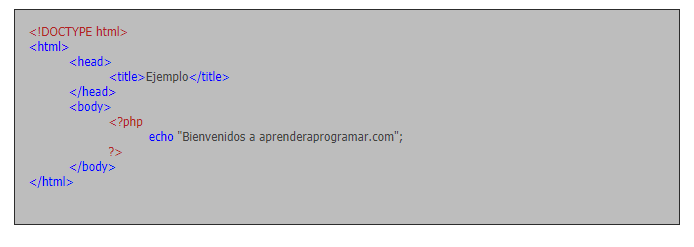
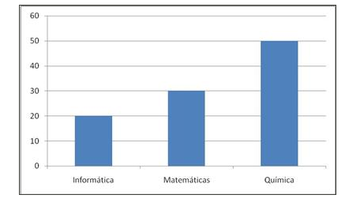

PHP es un lenguaje de código abierto muy popular, adecuado para desarrollo web y que puede ser incrustado en HTML. Es popular porque un gran número de páginas y portales web están creadas con PHP. Código abierto significa que es de uso libre y gratuito para todos los programadores que quieran usarlo. Incrustado en HTML significa que en un mismo archivo vamos a poder combinar código PHP con código HTML, siguiendo unas reglas.
PHP se utiliza para generar páginas web dinámicas. Recordar que llamamos página estática a aquella cuyos contenidos permanecen siempre igual, mientras que llamamos páginas dinámicas a aquellas cuyo contenido no es el mismo siempre. Por ejemplo, los contenidos pueden cambiar en base a los cambios que haya en una base de datos, de búsquedas o aportaciones de los usuarios, etc. ¿Cómo trabaja PHP? El lenguaje PHP se procesa en servidores, que son potentes ordenadores con un software y hardware especial. Cuando se escribe una dirección tipo http://www.aprenderaprogramar.com/index.php en un navegador web como Internet Explorer, Firefox o Chrome, ¿qué ocurre? Se envían los datos de la solicitud al servidor que los procesa, reúne los datos (por eso decimos que es un proceso dinámico) y el servidor lo que devuelve es una página HTML como si fuera estática. El esquema es: Petición de página web al servidor --> El servidor recibe la petición, reúne la información necesaria consultando a bases de datos o a otras páginas webs, otros servidores, etc --> El servidor responde enviando una página web “normal” (estática) pero cuya creación ha sido dinámica (realizando procesos de modo que la página web devuelta no siempre es igual). En resumen:
En un sitio dinámico, la información generalmente está contenida en una base de datos. Cada vez que mostramos la página, como por ejemplo una página de noticas, buscamos en la base de datos las últimas noticias que tenemos ingresadas para mostrar en el navegador del visitante. Ahora bien, ¿cómo se consigue que la página vaya mostrando noticias nuevas? Simplemente cargando las mismas en la base de datos, por ejemplo, a través de un formulario que rellena una persona y que una vez relleno cuando pulsa “Enviar” implica que lo que haya escrito se guarde en nuestra base de datos. De esta manera, cuando solicitamos la página web y el servidor consulte la base de datos, encontrará esta nueva información y mostrará nuestra página de forma distinta a como se veía anteriormente. Por regla general este tipo de lenguaje suele ser utilizado para crear contenido dinámico y poder interactuar con el usuario. Veamos un ejemplo del contenido de una página web php, que habremos de almacenar en un archivo que termina con la extensión .php y que contiene texto:
Como podrás comprobar el contenido del archivo incluye código HTML y en un momento dado aparece una etiqueta // " Estas etiquetas especiales nos permitirán entrar y salir del "modo PHP". Le sirven al servidor web para saber que tiene que interpretar el código incluido entre esas etiquetas como PHP. Lo que distingue a PHP de JavaScript es que el código es ejecutado en el servidor, generando HTML y enviándolo al cliente como si fuera una página web estática. El cliente recibirá los resultados que el servidor devuelve después de interpretar el código PHP, sin ninguna posibilidad de determinar qué código ha producido el resultado recibido. Es decir, a través de nuestro navegador podríamos ver el código HTML, pero nunca el código PHP que dio lugar al resultado HTML. El servidor web puede ser incluso configurado para que los usuarios no puedan saber si estás o no utilizando PHP. Lo mejor de usar PHP es que es extremadamente simple para el principiante, pero a su vez, ofrece muchas características avanzadas para los programadores profesionales y más avanzados. Con PHP puedes procesar la información de formularios, generar páginas con contenidos dinámicos, o enviar y recibir cookies, entre muchas más cosas. PHP lo utilizan desde pequeñas páginas web hasta grandes empresas. Muchas aplicaciones web están construidas usando PHP. Podemos citar Joomla y Drupal (gestores de contenido de páginas web), osCommerce y Prestashop (tiendas on-line para comercio electrónico), phpBB y SMF (sistemas de foros para páginas web), Moodle (plataforma educativa para educación on-line), etc. Entre las habilidades de PHP se incluye la creación de imágenes a partir de datos. Por ejemplo, supongamos que tenemos una academia con 20 alumnos matriculados en un curso de informática, 50 alumnos matriculados en un curso de matemáticas y 30 alumnos matriculados en un curso de química. Con PHP podemos generar automáticamente imágenes similares a esta:
PHP también puede utilizar y presentar resultados en otros estándares de datos o lenguajes propios de los desarrollos web, como XHTML y cualquier otro tipo de ficheros XML. PHP puede autogenerar éstos archivos y almacenarlos en el sistema de archivos en vez de presentarlos en la pantalla, utilizando estos ficheros para generar contenido dinámico. Es decir, el contenido dinámico puede surgir de otros sitios además de desde bases de datos. También se puede interactuar con otros servidores usando cualquier protocolo. Por último, PHP puede enlazarse con otros lenguajes muy potentes como Java. En resumen, PHP es un lenguaje potente, muy usado y de gran interés para los desarrollos web